Theme Settings
Theme Settings allow you to control the overall design and common elements of your online store. From this panel, you can customize important aspects such as colors, typography, and other global styling options that appear throughout your website. These settings help maintain a consistent look and feel across all pages while allowing you to easily match your store’s appearance with your brand identity without editing any code.
Favicon
A favicon is a small icon displayed in the browser tab, bookmarks, and browser windows. It helps customers quickly identify your store and improves brand recognition across different browsing environments.
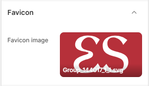
Add a Custom Favicon for Your Store
With Rare, you can easily upload a custom favicon image that represents your brand identity. Using a recognizable favicon helps create a consistent and professional appearance for your online store.
Steps
- From your Shopify admin, go to Online Store → Themes.
- Click Customize to open the Theme Editor.
- Click on the Theme Settings (gear icon) in the left sidebar.
- Select the Favicon section.
- Under Favicon image, click Select image to upload your favicon file.
- Click Save to apply your changes.
- Favicon image: Upload your store's logo or icon image file (e.g., SVG or PNG) to display as the browser icon.
Typography
Typography plays a crucial role in defining the visual hierarchy, tone, and readability of your online store. With the Typography settings in Rare, you can customize the fonts and font scale used for both headings and body text across your entire website.
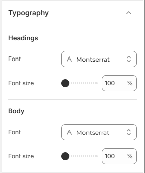
Customize Your Store Fonts
Rare allows you to easily personalize the fonts used throughout your store to match your brand style without editing any code.
Steps
- From your Shopify admin, go to Online Store → Themes.
- Click Customize to open the Theme Editor.
- Click on Theme Settings (gear icon) in the left sidebar.
- Select the Typography section.
- Configure your Headings and Body font family and font size settings.
- Click Save to apply your changes.
-
Headings:
- Font: Click Change to select your preferred font family for section titles, headings, and product names (for example: Montserrat).
- Font Size: Adjust the percentage scale slider to increase or decrease heading sizes across your store (for example: 100%).
-
Body:
- Font: Click Change to select the font family used for paragraph text, descriptions, and UI controls (for example: Montserrat).
- Font Size: Adjust the percentage scale slider to scale body text size for optimal readability (for example: 100%).
Layout
The Layout settings allow you to control the overall max container width and grid spacing of your store’s content. You can adjust the Page width to define how wide your website layout appears, and fine-tune horizontal and vertical grid spacing across your store.
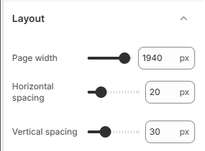
Customize Your Store Layout
Rare allows you to easily customize your store layout by controlling the page container width and the horizontal and vertical grid spacing.
Steps
- From your Shopify admin, go to Online Store → Themes.
- Click Customize to open the Theme Editor.
- Click on Theme Settings (gear icon) in the left sidebar.
- Select the Layout section.
- Adjust the Page width, Horizontal spacing, and Vertical spacing sliders.
- Click Save to apply your changes.
- Page width: Adjust the slider to set the maximum width of your store container layout in pixels (for example: 1940px).
- Horizontal spacing: Adjust the slider to set horizontal gap spacing between grid columns in pixels (for example: 20px).
- Vertical spacing: Adjust the slider to set vertical gap spacing between grid rows in pixels (for example: 30px).
Colors
One of the most important elements in creating a visually appealing and functional online store is the proper use of color. A well-designed color system helps reinforce your brand identity while also improving the overall shopping experience for your customers. In Rare, color schemes allow you to define background colors, text colors, button styles, and accent colors that can be applied across different sections of your store.
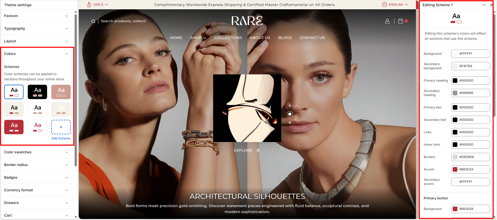
Customize Your Colors to Match Your Brand
Personalizing your theme’s colors is simple with Rare. You can easily adjust the available color schemes or click Add Scheme to create a new scheme matching your brand identity.
Steps
- From your Shopify admin, go to Online Store → Themes.
- Click Customize to open the Theme Editor.
- Click on Theme Settings (gear icon) in the left sidebar.
- Select the Colors section.
- Click on an existing color scheme (e.g. Scheme 1) to edit its colors, or click Add Scheme to create a new scheme.
- Click Save to apply your color changes.
Color Swatches
The Color swatches settings allow you to control the display, shape, and option triggers for color variant swatches across your product listings, collection pages, and product pages.
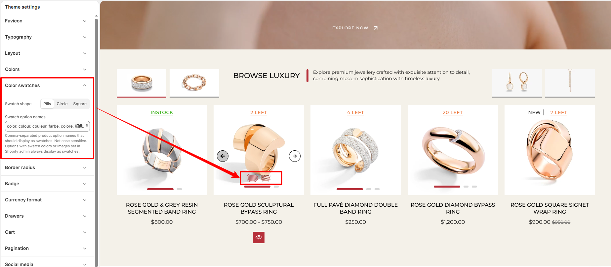
Customize Swatch Shape and Option Names
With Rare, you can customize the visual shape of your swatches and define which product variant option names should automatically trigger swatch displays.
Steps
- From your Shopify admin, go to Online Store → Themes.
- Click Customize to open the Theme Editor.
- Click on Theme Settings (gear icon) in the left sidebar.
- Select the Color swatches section.
- Select your preferred Swatch shape (Pills, Circle, or Square).
- Under Swatch option names, enter the comma-separated variant option names (e.g. color, colour, couleur, farbe, colore, material, finish).
- Click Save to apply your changes.
-
Swatch shape: Select the shape style for color swatches displayed across your
store:
- Pills: Displays rounded pill-shaped swatches.
- Circle: Displays circular swatches.
- Square: Displays square swatches with sharp corners.
- Swatch option names: Enter a comma-separated list of product option names (not case-sensitive) that should be rendered as color swatches (for example: color, colour, couleur, farbe, colore, 颜色, 色, material, finish).
Border Radius
The Border radius settings allow you to control the corner roundness of key UI elements across your store, including product cards, buttons, images, badges, input fields, and side drawers.
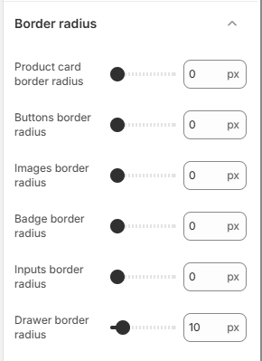
Customize Element Corner Roundness
Adjusting the border radius slider for each element type lets you choose between sharp corners (0px) or rounded corners to match your store's brand aesthetic.
Steps
- From your Shopify admin, go to Online Store → Themes.
- Click Customize to open the Theme Editor.
- Click on Theme Settings (gear icon) in the left sidebar.
- Select the Border radius section.
- Adjust the border radius sliders for your desired elements.
- Click Save to apply your changes.
- Product card border radius: Adjust the corner roundness of product cards across collection grids and section sliders (for example: 0px).
- Buttons border radius: Set the corner roundness of call-to-action and secondary buttons (for example: 0px).
- Images border radius: Customize corner roundness for promotional and content images (for example: 0px).
- Badge border radius: Set the corner roundness of product badges and status tags (for example: 0px).
- Inputs border radius: Adjust corner roundness for text input fields, search bars, and dropdown controls (for example: 0px).
- Drawer border radius: Set the corner roundness of overlay drawers such as the Cart Drawer and Quick Search Drawer (for example: 10px).
Badges
The Badges settings allow you to control promotional labels and real-time inventory status indicators displayed on product cards across your store. Highlighting discounts, sold-out items, and live stock levels provides customers with immediate product awareness and helps drive purchase decisions.
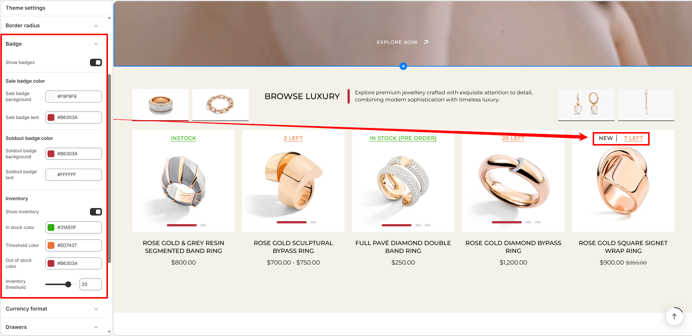
Customize Badge Colors and Inventory Indicators
With Rare, you can customize color schemes for sale and sold-out badges, enable real-time inventory stock indicators, and set custom stock threshold counts directly from the Theme Editor.
Steps
- From your Shopify admin, go to Online Store → Themes.
- Click Customize to open the Theme Editor.
- Click on Theme Settings (gear icon) in the left sidebar.
- Select the Badges section.
- Enable Show badges, customize the colors for sale and sold-out badges, and configure the inventory alert settings.
- Click Save to apply your changes.
- Show badges: Toggle to enable or disable product badges (such as Sale or Sold out) and status labels across all product cards.
-
Sale badge color: Customize the color styling for sale and promotional badges:
- Sale badge background: Select the background fill color for sale badges (for example: #F9F9F9).
- Sale badge text: Select the text and label color displayed inside sale badges (for example: #B6303A).
-
Soldout badge color: Customize the color styling for out-of-stock badges:
- Soldout badge background: Select the background fill color for sold-out badges (for example: #B6303A).
- Soldout badge text: Select the text and label color displayed inside sold-out badges (for example: #FFFFFF).
-
Inventory: Configure stock availability alerts and threshold indicators:
- Show inventory: Toggle to display real-time inventory status badges (such as INSTOCK, LOW STOCK, or OUT OF STOCK) directly on product cards.
- In stock color: Choose the color displayed when the product is in stock (for example: #31AE0F).
- Threshold color: Choose the color displayed when product inventory is at or below the specified low-stock threshold (for example: #ED7437).
- Out of stock color: Choose the color displayed when a product is out of stock (for example: #B6303A).
- Inventory threshold: Set the numerical quantity threshold (for example: 20) using the slider or number input. When product inventory falls at or below this number, the low-stock alert (e.g., 2 LEFT, 20 LEFT) is automatically displayed.
Currency Format
The Currency format settings control how monetary values and price tags are displayed throughout your store. These settings ensure prices are presented clearly and consistently across all pages, helping customers immediately identify product costs and the active currency.
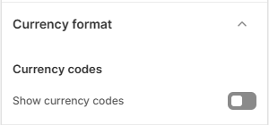
Display Currency Codes on Storefront Prices
In the Rare theme, you can choose whether currency codes are displayed alongside product prices. Showing currency codes is particularly useful for stores that sell internationally or support multiple currencies, giving shoppers clarity during their purchasing journey.
Steps
- From your Shopify admin, go to Online Store → Themes.
- Click Customize to open the Theme Editor.
- Click on Theme Settings (gear icon) in the left sidebar.
- Select the Currency format section.
- Enable or disable the Show currency codes toggle according to your store preference.
- Click Save to apply your changes.
- Show currency codes: Toggle this setting on to display the three-letter currency code (such as USD, EUR, GBP, CAD, or INR) next to product prices throughout the store (e.g., on product cards, product pages, and cart summaries).
Drawers
The Drawers settings allow you to define a unified color scheme for all slide-out overlay drawers throughout your store. This ensures a consistent, high-end visual appearance across various interactive panels, including the cart drawer, search drawer, mobile navigation menu, quick view, and collection filter drawers.
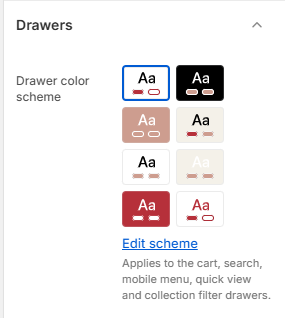
Customize Drawer Color Scheme
With Rare, you can select any of your preconfigured color schemes to automatically style the background, text, borders, and buttons of all drawer components across your store.
Steps
- From your Shopify admin, go to Online Store → Themes.
- Click Customize to open the Theme Editor.
- Click on Theme Settings (gear icon) in the left sidebar.
- Select the Drawers section.
- Select your desired Drawer color scheme from the available color presets, or click Edit scheme to customize scheme colors.
- Click Save to apply your changes.
-
Drawer color scheme: Choose the color scheme applied to all sliding overlay
panels in the theme. This setting globally styles:
- Cart Drawer: The slide-out mini-cart displaying selected products and checkout buttons.
- Search Drawer: The quick search panel with search input and live results.
- Mobile Menu Drawer: The mobile navigation drawer on mobile and tablet screens.
- Quick View Drawer: The product quick-view modal drawer.
- Collection Filter Drawer: The faceted collection filtering and sorting drawer.
Cart
The Cart settings allow you to control how the shopping cart functions and appears across your store. You can select between a slide-out drawer and a full cart page, display order notes, enable tax information, add discount code fields, encourage higher order values with a free shipping progress bar, enforce terms & conditions agreements, and show product recommendations when the cart is empty.
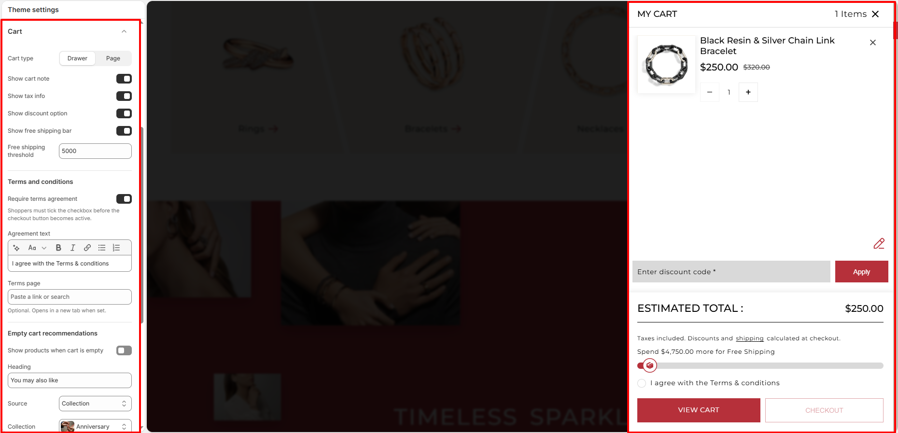
Customize Cart & Cart Drawer Settings
With Rare, configuring your shopping cart is straightforward. Tailor the cart experience to maximize conversions, satisfy legal terms requirements, and increase average order value.
Steps
- From your Shopify admin, go to Online Store → Themes.
- Click Customize to open the Theme Editor.
- Click on Theme Settings (gear icon) in the left sidebar.
- Select the Cart section.
- Choose your preferred Cart type and configure the cart features, terms agreement, and empty cart product recommendations.
- Click Save to apply your changes.
-
Cart type: Select how the cart opens when customers add items:
- Drawer: Opens a slide-out cart drawer on the side without leaving the current page.
- Page: Redirects customers to a dedicated full shopping cart page
(
/cart).
- Show cart note: Enable this toggle to let customers add special delivery instructions or custom order notes directly from the cart.
- Show tax info: Display applicable tax and shipping calculation notes inside the cart summary.
- Show discount option: Display a promotional discount code input field and Apply button inside the cart drawer so customers can apply coupon codes before checkout.
- Show free shipping bar: Enable a real-time progress bar that notifies shoppers how much more they need to add to their cart to unlock free shipping.
- Free shipping threshold: Set the minimum cart subtotal amount (for example: 5000) required to qualify for free shipping.
-
Terms and conditions:
- Require terms agreement: Require shoppers to check a confirmation checkbox agreeing to your store terms before the checkout button becomes active.
- Agreement text: Enter the customizable text displayed next to the agreement checkbox (for example: I agree with the Terms & conditions).
- Terms page: Link to your store's terms and conditions or policy page (opens in a new tab when clicked).
-
Empty cart recommendations:
- Show products when cart is empty: Toggle to display curated product suggestions when the cart has no items.
- Heading: Set the section title for empty cart recommendations (for example: You may also like).
- Source: Choose whether recommendations are sourced from a Collection or individually chosen via Selected products.
- Collection / Products: Select the specific collection (e.g. Anniversary) or individual products to showcase.
- Products to show: Set the maximum number of recommended products to display using the slider (for example: 4).
Pagination
The Pagination settings allow you to customize the appearance of page navigation controls across collection grids, search result pages, and blog lists. Tailoring button backgrounds, active states, and hover effects ensures clear, user-friendly browsing that matches your store's brand aesthetic.
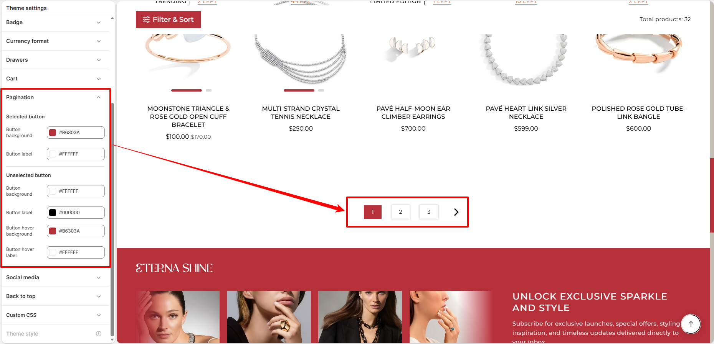
Customize Selected and Unselected Pagination Buttons
In the Rare theme, you have granular control over active and inactive page button styles, text colors, and interactive hover transitions.
Steps
- From your Shopify admin, go to Online Store → Themes.
- Click Customize to open the Theme Editor.
- Click on Theme Settings (gear icon) in the left sidebar.
- Select the Pagination section.
- Configure color schemes for both Selected button and Unselected button states.
- Click Save to apply your changes.
-
Selected button: Define the styling for the currently active page indicator:
- Button background: Set the background fill color for the active page button (for example: #B6303A).
- Button label: Set the text and number color displayed on the active page button (for example: #FFFFFF).
-
Unselected button: Customize default and hover styles for inactive page buttons and
directional arrow controls:
- Button background: Set the default background color for unselected page buttons (for example: #FFFFFF).
- Button label: Set the default text and icon color for unselected page buttons (for example: #000000).
- Button hover background: Set the background fill color when shoppers hover over a page button (for example: #B6303A).
- Button hover label: Set the text and icon color displayed during hover (for example: #FFFFFF).
Social Media
The Social media settings allow you to connect your online store with all your active social network profiles. Entering your account URLs will automatically display the corresponding branded social icons in the footer area and interactive menus across your store.
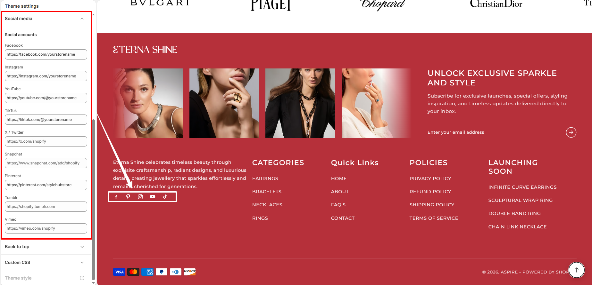
Connect Your Social Media Profiles
Rare supports direct integration with all leading social channels. Simply paste your profile or channel links into the corresponding fields.
Steps
- From your Shopify admin, go to Online Store → Themes.
- Click Customize to open the Theme Editor.
- Click on Theme Settings (gear icon) in the left sidebar.
- Select the Social media section.
- Under Social accounts, paste the full profile URLs for the networks you want to display.
- Click Save to apply your changes.
-
Supported Social Accounts: Enter full URLs (e.g.
https://...) for any of the supported platforms:- Facebook: e.g.,
https://facebook.com/yourstorename - Instagram: e.g.,
https://instagram.com/yourstorename - YouTube: e.g.,
https://youtube.com/@yourstorename - TikTok: e.g.,
https://tiktok.com/@yourstorename - X / Twitter: e.g.,
https://x.com/yourstorename - Snapchat: e.g.,
https://www.snapchat.com/add/yourstorename - Pinterest: e.g.,
https://pinterest.com/yourstorename - Tumblr: e.g.,
https://yourstorename.tumblr.com - Vimeo: e.g.,
https://vimeo.com/yourstorename
- Facebook: e.g.,
- Automatic Icon Display: Social media icons only appear on the storefront when a valid link is provided. Any fields left blank will remain hidden automatically.
Back to Top
The Back to top settings allow you to display a floating scroll button that lets shoppers instantly return to the top of any page. You can customize the button's position, size, scroll trigger distance, visual progress ring, hover labels, and full color scheme.
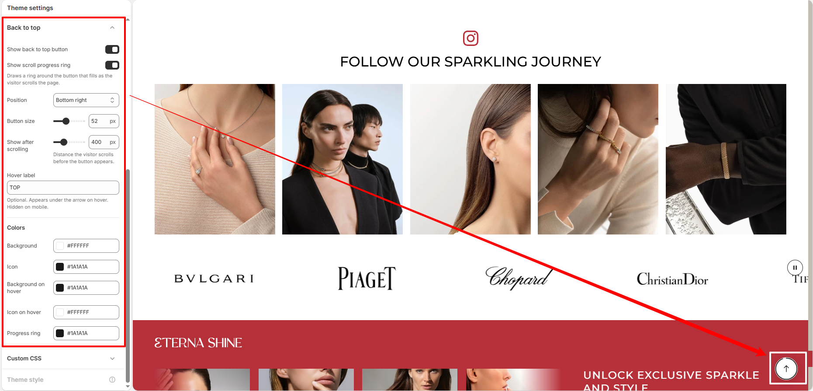
Customize Back to Top Button and Progress Ring
Improve site navigation on longer pages like collections, blogs, and product descriptions by enabling an intuitive scroll-to-top button with interactive progress tracking.
Steps
- From your Shopify admin, go to Online Store → Themes.
- Click Customize to open the Theme Editor.
- Click on Theme Settings (gear icon) in the left sidebar.
- Select the Back to top section.
- Enable the button, configure position and scroll distance, and customize the button colors and progress ring.
- Click Save to apply your changes.
- Show back to top button: Toggle this option to display the floating scroll button on the storefront.
- Show scroll progress ring: Enable a circular progress ring around the button that dynamically fills as the visitor scrolls down the page.
- Position: Choose the screen placement for the button (e.g. Bottom right or Bottom left).
- Button size: Adjust the diameter/size of the button in pixels (for example: 52px).
- Show after scrolling: Specify the vertical scroll distance in pixels (for example: 400px) before the button becomes visible.
- Hover label: Enter optional text (for example: TOP) that appears below the arrow icon on hover (hidden on mobile devices).
-
Colors:
- Background: Choose the background fill color of the button (for example: #FFFFFF).
- Icon: Select the color of the upward arrow icon (for example: #1A1A1A).
- Background on hover: Set the background fill color when the button is hovered (for example: #1A1A1A).
- Icon on hover: Set the icon color displayed during hover (for example: #FFFFFF).
- Progress ring: Choose the stroke color of the circular scroll progress indicator (for example: #1A1A1A).
FAQs
Why are my changes in Theme Settings not showing on the store?
Make sure you click Save in the Theme Customizer after making changes. If the issue persists, refresh the page or check that you are editing the currently published theme.
Can I change Theme Settings without affecting my live store?
Yes. You can duplicate your theme and customize the duplicate version. This allows you to test design changes safely before publishing them.
What happens if I reset or change a Theme Setting?
When a Theme Setting is changed, the update will automatically apply across all sections that use that setting, helping keep your store design consistent.